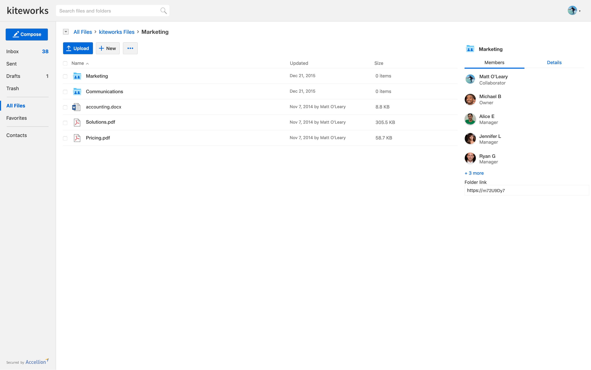
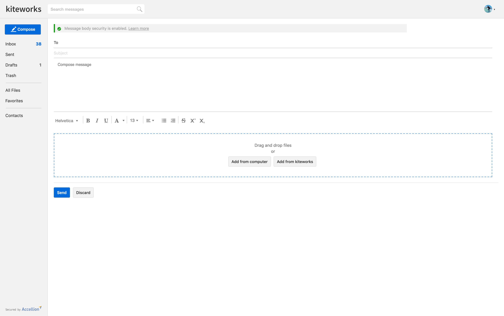
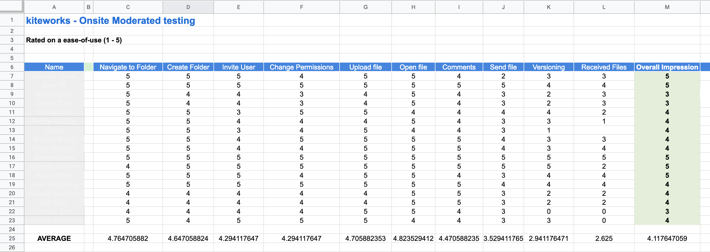
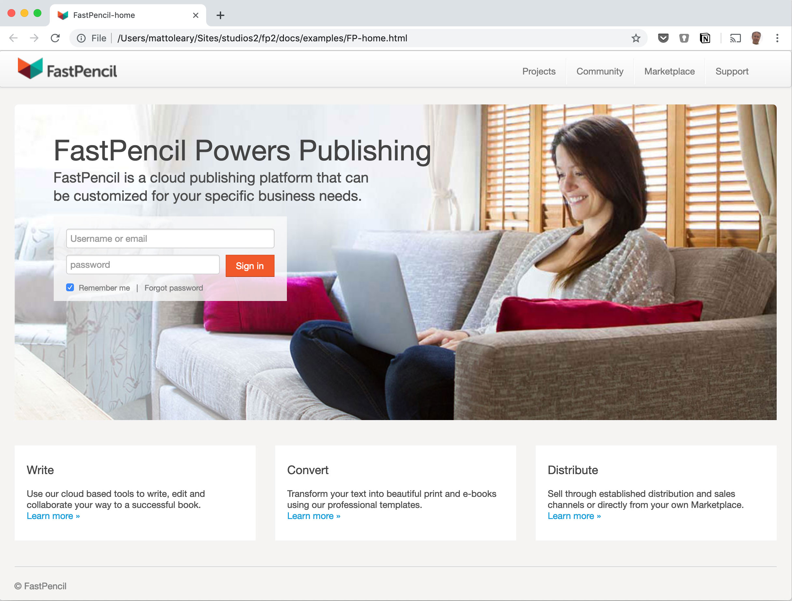
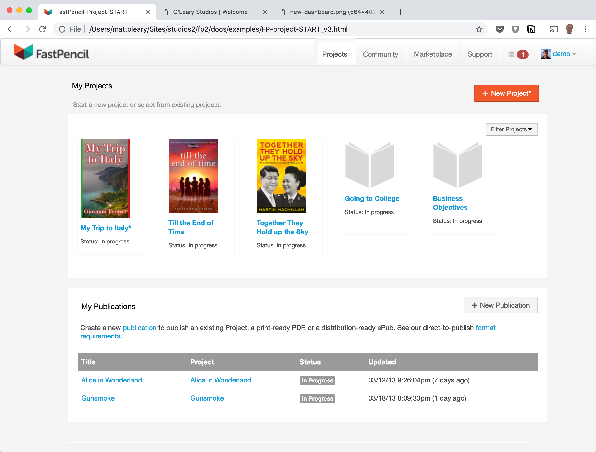

Thanks for visiting! 👋 I'm an experience and interaction design professional currently designing enterprise file sharing and collaboration products at Axway. Before that I designed products at Accellion and at FastPencil where I redesigned the cloud-based publishing platform. I have a varied background in design–from founding a surf magazine to running production at creative agencies. Recently I created keeptheapostrophe.com with my father. I occasional write about UX and other subjects on Medium. Check out my resume here.
My design process involves understanding customer and business goals via discussions and sketching out ideas with product owners. From there I prototype, test and iterate based on feedback. I love discussing and testing with customers. Things I check for: is this useful, usable, understandable, accessible? I collaborate closely with Dev and QA to build and test, then validate production versions with customers. Design isn't done until customers have successful outcomes–getting their jobs done with ease and efficiency.
At Accellion I redesigned the secure file sharing web application to better support the various jobs customers were visiting the site for. While keeping the ability to share folders, I put more focus back on secure file sharing functions. I also incorporated patterns from web and desktop email applications in order to reduce training and increase a sense of familiarity for new users.


Usability Testing
While at Accellion I lead a week-long usability study project with a key city government customer. Each day I met with employees from various departments within the city: planning, police, fire, business development, IT and more. The individuals I met with had varying levels of experience using the product, from zero experience to power users. The goal of the project was to understand the behaviors and needs of a representative customer to improve the product for all customers and inform product design decisions going forward. The sessions took place in the users own environment and context to learn how they are using the product and where they are having issues. Sessions started with a casual interview followed by observation of the users going through a series of common tasks. The project revealed a wealth of issues that would not have been discovered without this deep level of testing.

Publishing Platform Product Design
At FastPencil I made a complete overhaul of the online publishing platform in order to improve the user experience and visual design. The added goal was to create a brandable platform that could be licensed to other book sellers who wanted to offer their own self-publishing service.
The new dashboard is easily branded and has a simple and clear choice of actions: the primary being starting a new project while displaying clear access to all of the user's existing projects.
Outcome: Books a Million and On Demand Books have have both licensed the platform. They've each done some branding as expected but the product experience and much of the look-and-feel remains intact. Also Fast Pencil was acquired at this time based on the updated platform offering.


A whale watching app
This is a concept project intended to help customers of Santa Cruz Whale Watching find out more about the sea creatures they may see. Concept features: location services to report whale sightings, user pictures can be uploaded, and ability to access special offers for future trips. See prototype